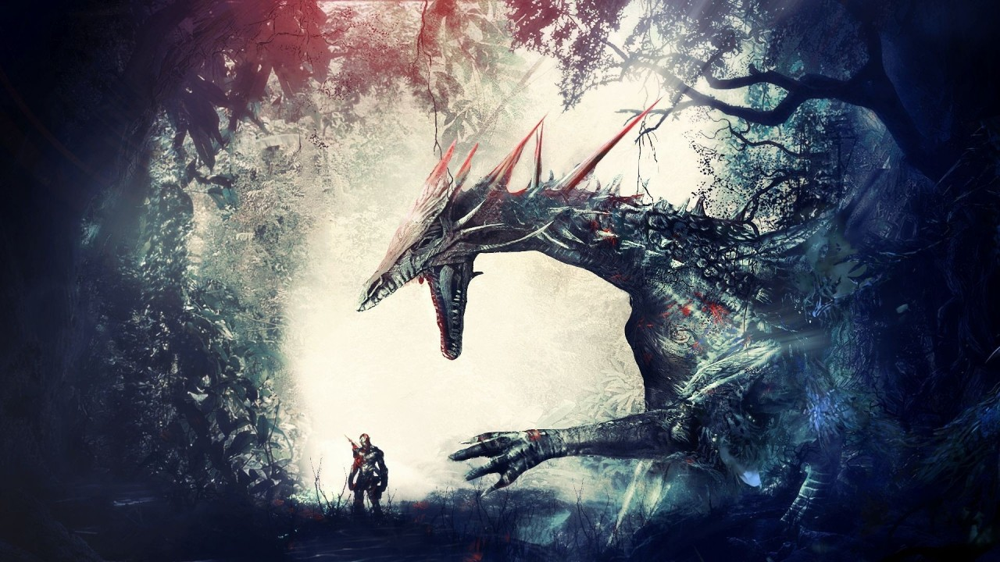
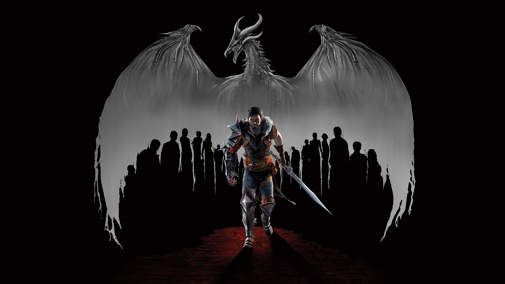

Dragon Age se mostra como algo muito além de um simples jogo de RPG; com um mundo em constante desevolvimento criativo, a franquia já conquistou milhares de fãs ao redor do mundo.

A Bioware (Desenvolvedora do Jogo.) descreve a história de Dragon Age Origins como sendo uma "fantasia heróica sombria" que é contada em uma escala épica com temas adultos. O enredo do jogo decorre no universo de Thedas, um universo abandonado pelo seu deus como castigo pelos pecados dos seus habitantes. O jogador é nativo de Ferelden, um país do universo de Thedas. O jogador começa sua jornada em uma das seis "histórias de origens" que servem como uma introdução e explicação da origem do personagem principal e do seu estatuto social. A história de origem escolhida determina quem o jogador será e como as pessoas reagirão a ele. O jogador pode escolher entre Humano Nobre, Elfo Citadino, Elfo de Dale, Anão Comum, Anão Nobre e Mago. O enredo de Dragon Age pode variar dramaticamente de jogador para jogador, devido as escolhas que podem ser feitas em relação à moralidade e à história de origem. Independentemente da escolha da origem, o jogador acaba por se juntar a uma ordem de guerreiros empenhada em combater os Darkspawn.
Atualizado há 3 minutos atrás

Dragon Age II se passa no mundo místico de Thedas, e conta a história de Hawke, um humano que fugiu da nação de Ferelden durante os eventos de Dragon Age: Origins e chegou em uma cidade-estado vizinho, chamada Kirkwall, como um fugitivo. Durante uma década de história, Hawke se torna um cidadão poderoso e influente, conhecido como o lendário "Champion of Kirkwall"(Campeão de Kirkwall), e o centro de eventos que mudarão o curso de Thedas para sempre.
Atualizado há 8 horas atrás.

O jogo tem início em 9:41 Dragão, um ano após os eventos de Dragon Age II. Orlais está sofrendo com uma guerra civil, ameaçando a tranquilidade no sul de Thedas. O Circle of Magi rebelou-se contra os Templários em uma tentativa por independência, resultando em uma grande guerra. Em uma última tentativa de alcançar a paz, a Divina Justinia V convocou o Conclave Divino(um comitê com os embaixadores dos templários e dos magos rebeldes com a finalidade de negociar um compromisso de paz definitivo). Quando uma enorme explosão atinge o Templo das Cinzas Sagradas onde ocorre o Conclave, matando todos no local e cria um "rasgo no Véu" chamada A Brecha, permitindo a invasão de demônios em uma Thedas desprotegida. O jogador assume o controle do único sobrevivente dessa explosão e recebe a "Âncora" (uma marca mágica que detêm o controle sobre a Brecha e as Fissuras). Esse poder e com a habilidade de selar as Fissuras faz do protagonista ser aclamado por muitos como um messias, mais especificamente o Arauto de Andraste. A Inquisição, uma organização independente que é recriada com a sansão da Divina Justinia, para restaurar a ordem em Thedas, na qual o jogador começa o jogo fazendo parte, virando posteriormento o seu lider, o Inquisidor.
Atualizado há 4 horas atrás.
Thedas é um continente no hemisfério do sul, e o único continente conhecido no universo Dragon Age, onde todos os jogos se passam. Presume-se que haja outros continentes, já que os Qunari não são de Thedas originalmente, e sim de uma terra desconhecida do outro lado do oceano Norte. De acordo com fontes, os humanos também vieram do norte.
A palavra Thedas origina-se de Tevene, que referia-se a todas as terras além do Império e eventualmente, passou a englobar o continente todo. Um nativo de Thedas é conhecido como Theod'o'si'ano. Ao Sul do continente, está as Terras Selvagens de Korkari onde se encontra a misteriosa Ilha Sunless.